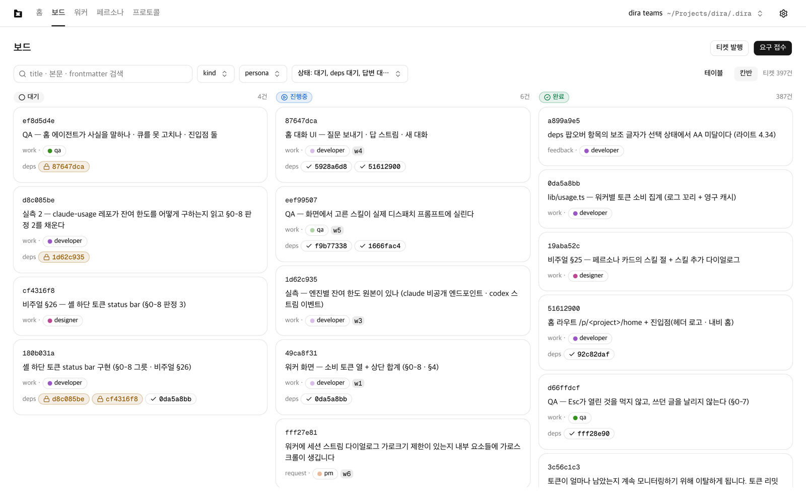
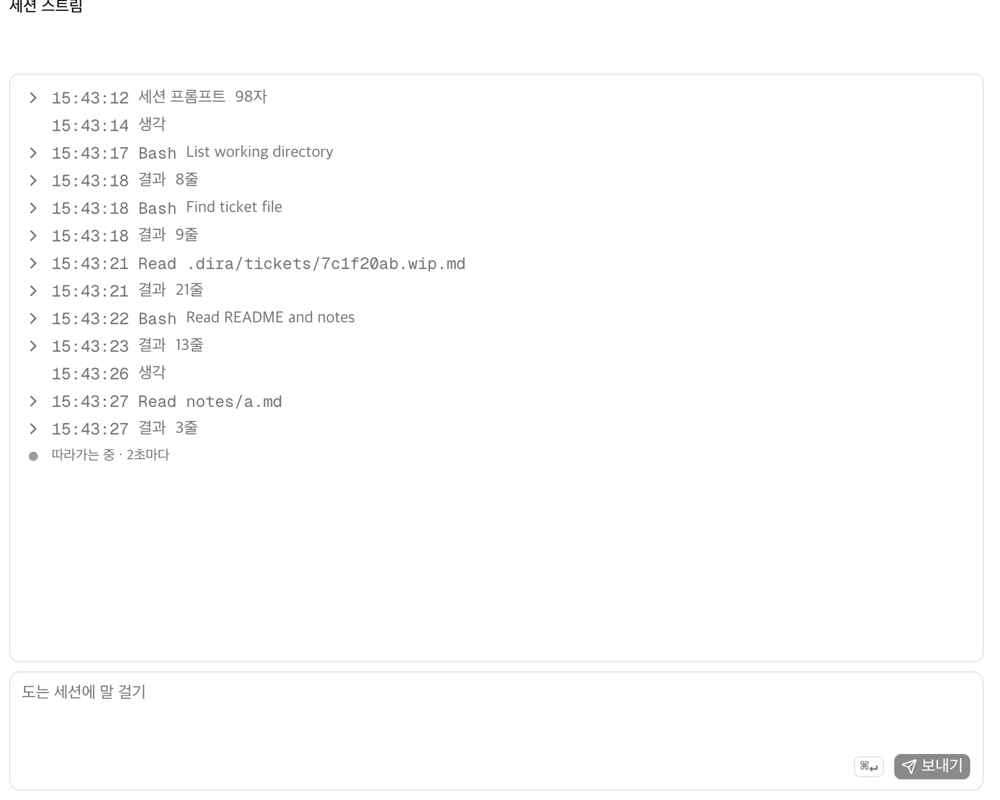
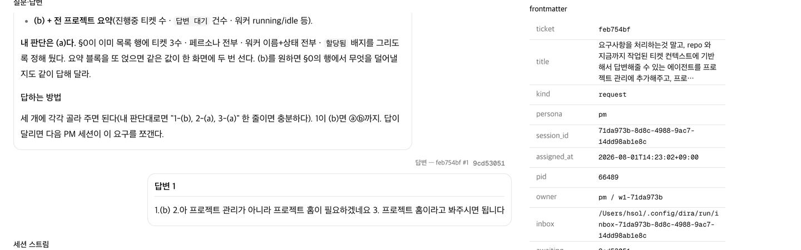
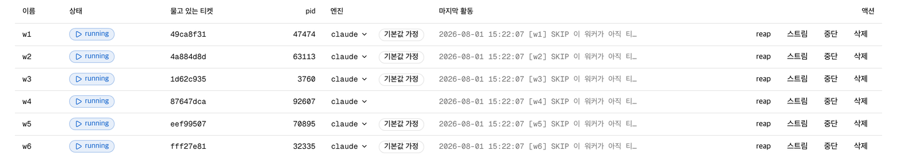
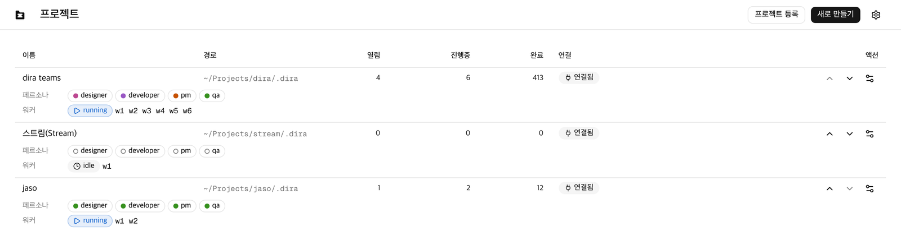
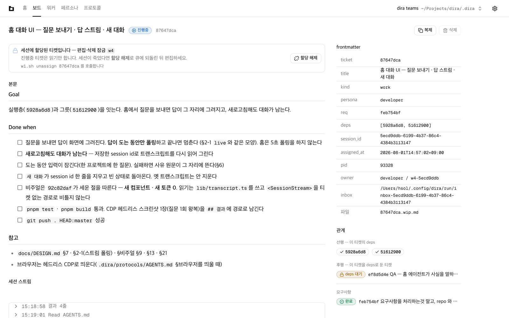

로컬 에이전트 러너
에이전트 팀을 화면으로 본다
티켓을 큐에 넣으면 cron에 물린 워커가 claude -p 세션에 넘긴다.
도는 동안 무엇을 하고 있는지 화면에서 보고, 도는 세션에 말을 건다.
v0.1.2 · macOS (Apple Silicon) · MIT · 자동 업데이트
티켓 하나가 파일 하나다
디렉터리 하나가 큐 전부다. 상태는 파일명 접미사에 있고, 나머지는 frontmatter다. DB도 인덱스도 없다.
크론잡 하나가 티켓 한 건을 문다
동시성은 설정값이 아니라 워커 파일의 개수다. 더 돌리려면 워커를 하나 더 만든다.
도는 세션을 보고, 말을 건다
보드·티켓·워커·페르소나·프로토콜. 끝난 뒤 로그를 뒤지는 대신 도는 동안 개입한다.
bash와 python3 표준 라이브러리
그 밖으로 나가지 않는다. 설치는 git clone이 끝이고, 화면을 안 쓰면 설치할 것도 없다.

- 0엔진 의존성
bash + python3 표준 라이브러리 - 6이 레포에서 동시에 도는 워커
- 405자기 큐가 처리한 티켓
완료 397 - 4일첫 커밋에서 v0.1.2까지
커밋 389
도는 동안
세션에 말을 건다
턴이 끝나기를 기다리지 않는다. 스트림 아래 칸에 한 줄 넣고 보내면 그 세션의 stdin으로 들어가, 하던 일을 접고 그 말을 따른다. 세션이 무엇을 읽고 무엇을 고쳤는지는 그 위에서 2초마다 따라간다.
- 입구는 세션마다 FIFO 하나. 디스패처가 만들고 디스패처가 지운다
- 스트림의 원본은 claude가 이미 쓰고 있는 트랜스크립트다. 새로 남기는 파일이 없다
- 참견은 화면이 지어낸 에코가 아니라 트랜스크립트에 실제로 남은 줄이다
- 창은 세션이 도는 동안이다. 턴이 끝나면 닫힌다

세 파일을 읽어 세 줄로 쓴다였고, 참견은
지금 읽은 것까지만, 한 줄로였다. 세션은
c.md를 읽지 않고 멈춰 한 줄짜리 파일을 남겼다.
막혔을 때
에이전트가 스스로 잠근다
추측으로 진행하는 대신 되묻는다. 티켓 본문에 질문을 붙이고 존재하지 않는 파일을 dep으로 걸어 아무 워커도 못 집게 만든다. 답을 쓰면 그 파일이 생겨 잠금이 저절로 풀린다.
- 잠긴 티켓은 큐에서 보인다. 화면에서 답할 수 있다는 뜻이다
- 사람이 상태를 되돌리지 않는다. 잠금과 해제가 같은 규칙이다
- 같은 이유로 죽는 티켓이 세션을 무한히 태우지 않는다 — 2회까지만 자동 회수하고 3회째는 질문이 된다

awaiting:에 걸린 해시는 아직 없는 파일이다. 답변을 쓰면 그 파일이 생긴다.동시성
워커를 하나 더 만든다
"몇 개까지" 같은 설정값이 없다. 워커 파일 하나가 크론잡 하나이고, 한 번 실행에 티켓 한 건을 문다. 앞 실행이 아직 세션을 쥐고 있으면 그 분의 tick은 그냥 넘어간다.
- 워커가 놓인 위치가 곧 큐의 루트다. 경로를 어디에도 적지 않는다
- 회수 판정은 시간이 아니라 프로세스 생존이다. 그래서 화면에 pid가 있다
- 워커 한 줄로 엔진을 바꾼다 —
claude가 기본이고 다른 CLI 에이전트도 같은 자리에 선다 - 세션 실행 상한은
TICKET_MAXRUN하나다. 넘으면 백로그로 돌아간다

여러 프로젝트
큐는 여럿, 앱은 한 벌
프로젝트가 5개여도 앱을 5개 띄우지 않는다. 큐 위치를 등록해 두고 앱 안에서 전환한다. 큐끼리는 서로 만나지 않는다 — 그 독립이 엔진의 전제다.
- 디스크를 스캔해 찾아다니지 않는다. 사용자가 등록한다
- 등록을 해제해도 큐 파일은 그대로다
- 등록 목록은 파일 하나이고, 등록 경로 외의 정보를 담지 않는다

그 아래서 도는 것
파일시스템이 곧 큐다
화면은 선택이다. 실제로 티켓을 물어 세션에 넘기는 것은 tick.sh 하나이고,
그것은 bash와 python3 표준 라이브러리 밖으로 나가지 않는다. 상주 루프도, DB도, 인덱스도 없다.
상태의 단일 출처는 티켓 파일 그 자체다.
# 설치는 이게 끝이다 git clone \ https://github.com/proofer-tech/dira.git \ ~/Projects/dira # 프로젝트 하나 붙이기 — 워커 파일 한 개 cat > myproject/.dira/workers/w1.sh <<'EOF' #!/bin/bash . "$HOME/Projects/dira/tick.sh" EOF # cron 두 줄. 워커가 놓인 위치가 곧 큐다 * * * * * .../w1.sh * * * * * sleep 30; .../w1.sh
- 루트를 어디에도 적지 않는다.
workers/의 부모가 큐다 - 두 줄인 이유는 cron의 최소 단위가 분이라서다. 30초 폴링을 그렇게 낸다
- 중지는 그 두 줄을 지우는 것이다
왜 이렇게 안 만들었나
-
시간 기반 클레임 만료를 버렸다
파일 기반 도구가 흔히 쓰는 1시간 만료는 오래 걸리는 정상 세션을 살아 있는데도 회수해, 같은 티켓을 두 세션이 동시에 수행한다. 프로세스 생존이 직접 증거다. 근거 — 매달린 세션 하나가 2시간 14분간 티켓을 쥐고 있었다.
-
전역 동시 실행 상한을 버렸다
예전엔
ps출력에서 엔진 프로세스를 셌는데, 엔진을 바꾸면 세는 패턴도 같이 바꿔야 하고 안 바꾸면 항상 0으로 세져 상한이 조용히 무력화됐다. 근거 — 동시 4세션이 공유 dev DB를 만져 컬럼 드롭이 관측됐다. -
상태를 frontmatter로 옮기지 않았다
상태가 파일명에 있는 이유는 rename이 그 자체로 락이기 때문이다. 잡기는
os.link한 번이고, 목적지가 있으면 커널이EEXIST를 준다 — 판정과 획득이 한 시스템콜 안에 있어 틈이 없다. Maildir와 같은 계보다.

session_id·pid·owner·inbox는 디스패처가 쓰고 사람은 건드리지 않는다.먼저 알아야 할 것
여기 없는 것
비목표는 아직 못 만든 것이 아니라 안 만들기로 한 것이다.
- 서버로 배포하지 않는다. 호스팅·도메인·원격 접속이 없다. 앱은 당신 맥에서 돌고 그 맥의 파일시스템에 붙는다.
- 인증·멀티유저가 없다. 파일시스템 권한이 곧 권한이다.
- 데스크톱 앱은 macOS(Apple Silicon)뿐이다. 엔진 자체는 macOS와 Linux에서 돈다.
- 실시간 푸시가 없다. 폴링이다. 모바일 레이아웃도 없다.
- 프로젝트를 자동으로 찾지 않는다. 디스크를 스캔하지 않고 당신이 등록한다.
- 우선순위가 없다. 순서는 생성일과
deps뿐이다. - 티켓 수백 건 규모를 전제한다. 매 tick마다 큐를 glob으로 훑는다. 인덱스가 없다.
- 워커를 만들 때마다 macOS가
앱 관리권한을 묻는다. 승인이 다음 등록까지 남지 않는다.